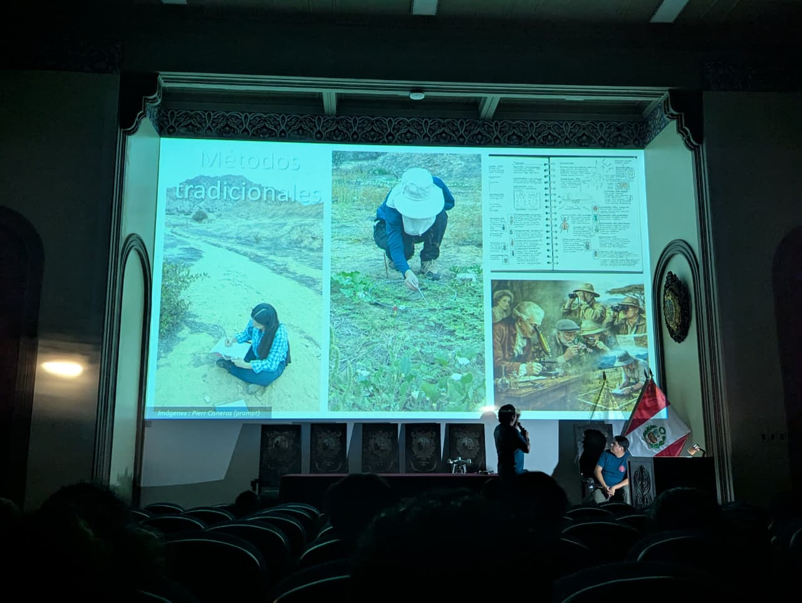

El Laboratorio de Ecología y Biogeografía participó exitosamente en el ciclo de charlas por el 108.º aniversario del Museo de Historia Natural
Se desarrollaron las charlas:
- 🛰️ “Ojos en el cielo: el papel de los drones en la ecología moderna” — @smithcisnerosj · @gabriel.m.sc
- 📅 Jueves 05 de febrero | 5:50 p. m.
- 🦉 “Comunicando sin hablar: entendiendo a las especies que protegemos” — @jaemy_romero
Ojos en el cielo: el papel de los drones en la ecología moderna
La creciente amenaza sobre la diversidad biológica nos exige incorporar nuevas herramientas tecnológicas en el estudio de los procesos ecológicos, cuyos datos son clave para una gestión de la biodiversidad basada en evidencia. En este marco, los drones nos permiten “tener los ojos en el cielo”, facilitando el registro de interacciones ecológicas a escalas antes difíciles de alcanzar. La presentación “Ojos en el cielo: el papel de los drones en la ecología moderna” aborda cómo los vehículos aéreos no tripulados han transformado la ecología, superando las limitaciones de la observación tradicional en campo y del ojo humano.

Comunicando sin hablar: entendiendo a las especies que protegemos
Cada día es más grave la amenaza sobre nuestras especies en peligro, y cada día hay más especies amenazadas. Para conocer cómo disminuir este grave problema, necesitamos entender cómo se comportan tanto en la naturaleza como en cautiverio. La ecología conductual nos permite comprender sin palabras las acciones, interacciones y reacciones de los animales bajo la presión de la actividad humana. Esta charla brindará ejemplos de cómo convertir este conocimiento en herramientas de conservación.

¡Agradecemos al Museo de Historia Natural por la invitación y a todas las personas que asistieron!